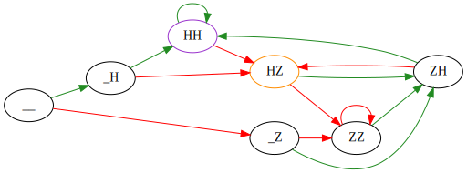

Matematika¶
Skúsme si zapísať túto hru pomocou našich grafov z minulej hodiny. V prvom rade si musíme premyslieť, aké sú všetky situácie, v ktorých môžme byť?
__: nepadlo ešte nič, práve začíname,_H,_Z: sme po prvom hode a padla jedna hlava respektíve jeden znak,HH,HZ,ZH,ZZ: posledné dva hody boli hlava-hlava, atď..
Zakreslime si do pekného prehľadného grafu vzťahy medzi všetkými týmito možnosťami:
import graphviz
COLOR_VYHRA_PRVY = "darkorange"
COLOR_VYHRA_DRUHY = "darkorchid"
COLOR_HLAVA = "forestgreen"
COLOR_ZNAK = "red"
HLAVA = "H"
ZNAK = "Z"
PRAZDNY = "_"
HODY = [HLAVA, ZNAK, PRAZDNY]
FARBY = {HLAVA: COLOR_HLAVA, ZNAK: COLOR_ZNAK}
d = graphviz.Digraph(graph_attr={"rankdir": "LR"})
for prvy_hod in HODY:
for druhy_hod in HODY:
if druhy_hod == PRAZDNY and prvy_hod != PRAZDNY:
continue # vynechaj tieto moznosti
for novy_hod in [HLAVA, ZNAK]:
d.edge(prvy_hod + druhy_hod, druhy_hod + novy_hod, color=FARBY[novy_hod])
d.node(HLAVA + ZNAK, color=COLOR_VYHRA_PRVY)
d.node(HLAVA + HLAVA, color=COLOR_VYHRA_DRUHY)
d
